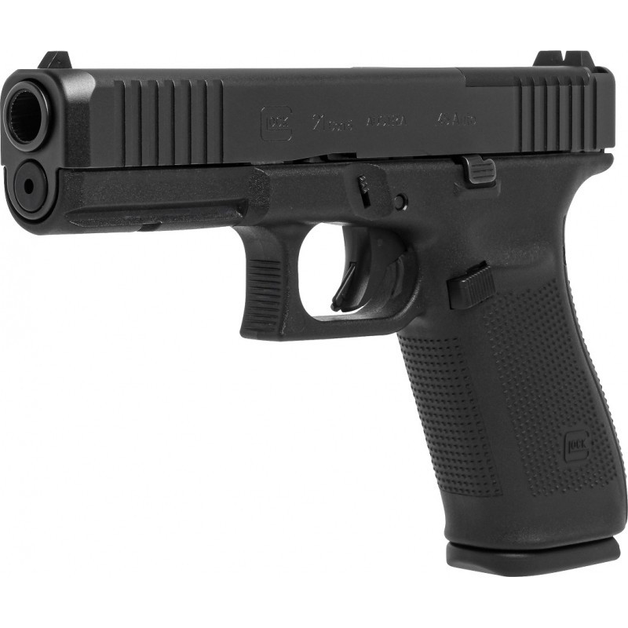
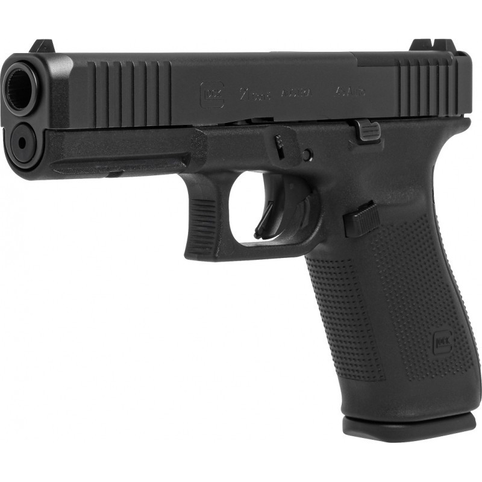

PISTOLAS GLOCK
 

PISTOLAS GLOCK
Las Glock cuenta con un armazón de polímero resistente y duradero, lo que la hace ligera y fácil de manejar. Su diseño ergonómico se adapta cómodamente a la mano del usuario, brindando un agarre seguro y una sensación de confianza durante su uso.